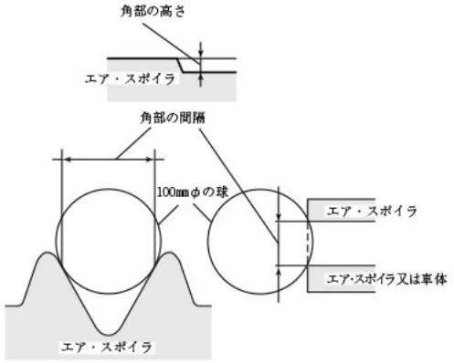

エア・スポイラの構造基準(参考)
JAF の公式サイトではありません。JAF が公開する PDF を自動変換した非公式の検索用アーカイブです。記載内容は必ず JAF の原本 PDF で出典をご確認ください。 検索と AI 質問つきのビューアで開く
P.1エア・スポイラの構造基準（参考）
エア・スポイラの構造基準（参考）
１．適用範囲
この構造基準は、専ら乗用の用に供する乗車定員１０人以下の普通自動車及び小型自動車、貨物の運送の用に供する車
両総重量２.８トン以下の普通自動車及び小型自動車並びに軽自動車に備えるエア・スポイラ（二輪自動車、側車付二輪自動車並びにカタピラ及びそりを有する軽自動車に備えるものを除く。）に適用する。
２．用語
「エア・スポイラ」とは、走行中における車体まわりの空気の流れを整流するために、車体の前部若しくは後部（最
前部の車軸と最後部の車軸との間における下面及び側面の部分を除く。）又は屋根部の前縁部、若しくは後縁部に付加された構造物（バンパ、灯火類及びそのハウジング、ラジエータ・グリル、導風板（貨物の運送の用に供する自動車の運転者室の屋根部に備えられた空気を整流するための板をいう。）並びに可倒式の構造物を除く。）をいう。
３．構造要件
３.１）エア・スポイラは、自動車の前部及び後部のいずれの部分においても、自動車の最前端又は最後端とならないものであること。ただし、バンパの下端より下方にある部分であって、直径１００ｍｍの球体が静的に接触することのできる部分（鉛直線と母線のなす角度が３０度である円錐を静的に接触させながら移動させた場合の接触点の軌跡より下方の部分を除く。）の角度が半径５ｍｍ以上であるもの又は角部の硬さが６０ショア（Ａ）以下の場合にあっては、この限りでない。
３.２）エア・スポイラ（バンパの下端より下方にある部分及び地上１.８ｍを超える部分を除く。）は、直径１００ｍｍの球体が静的に接触することのできる部分に半径２.５ｍｍ未満の角部を有さないものであること。ただし、角部の硬さが６０ショア（Ａ）以下のとき、又は角部の高さが５ｍｍ未満の場合若しくは角部の間隔（直径１００ｍｍの球体を２つの角部に静的に接触させたときの接点間の距離をいう。）が４０ｍｍ以下の場合であって角部が次表に定める角部の形状の要件を満足するときは、この限りでない。（例参照）
| 角部の高さ（h） | 角部の形状 | 角部の間隔（δ） | 角部の形状 |
|---|---|---|---|
| h＜5mm | 角部に外向きの尖った部分または鋭い 部分がないこと。 | 25＜δ≦40mm | 角部の半径が1.0mm以上であること |
| δ≦25 | 角部の半径が0.5mm以上であること |
例）角部の高さ及び間隔の例

３.３）エア・スポイラは、その付近における車体の最外側（バンパの上端より下方にある部分にあっては、当該自動車の最外側）とならないものであること。
３.４）エア・スポイラは、側方への翼状のオーバー・ハング部（以下「ウィング」という。）を有していないものであること。ただし、ウィング側端の部分と車体とのすき間が極めて小さい場合又はウィング側端が当該自動車の最外側から１６５ｍｍ以上内側にある場合又はウィング側端が当該自動車の最外側から１６５ｍｍ以上内側にないウィングの部分が歩行者等に接触した場合に衝撃を緩衝することができる構造である場合にあっては、この限りでない。
３.５）エア・スポイラは、溶接、ボルト・ナット、接着剤等により車体に確実に取り付けられている構造であること。